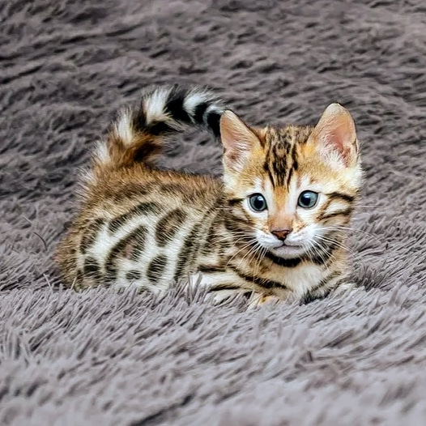

Для того чтобы ваша кошка была здорова и счастлива, ей необходимо сбалансированное питание. По своей природе кошки — хищники, потому в их рационе обязательно должно присутствовать мясо и, в отличие от собак, кошек нельзя кормить вегетарианской пищей. Для представителей семейства кошачьих протеин (белок) является основным источником энергии, вследствие чего кошкам необходимо большее содержание белка в пище, чем, например, собакам. Мясо — это не только протеин, но и необходимые кошкам питательные вещества, такие как таурин (для сердца и зрения), арахидоновая кислота (для здоровых кожи и шерсти) и витамин А (для шерсти и зрения). По своей природе кошки — хищники, потому в их рационе обязательно должно присутствовать мясо и, в отличие от собак, кошек нельзя кормить вегетарианской пищей. Для представителей семейства кошачьих протеин (белок) является основным источником энергии, вследствие чего кошкам необходимо большее содержание белка в пище, чем, например, собакам. Мясо — это не только протеин, но и необходимые кошкам питательные вещества, такие как таурин (для сердца и зрения), арахидоновая кислота (для здоровых кожи и шерсти) и витамин А (для шерсти и зрения). Для того чтобы кошка оставалась стройной, вам необходимо составить ей сбалансированный рацион, включающий все необходимые ее организму питательные вещества. Качественный корм должен быть разработан таким образом, чтобы, обеспечивая кошку всеми необходимыми микроэлементами, он в то же время был вкусным и нравился вашему питомцу. Хозяева зачастую рассматривают человеческую еду как лакомство для своих кошек, но помните — добавление подобной пищи в рацион кошки может серьезно навредить ее желудку! Особенно чувствительна пищеварительная система у котят, вследствие чего им нужны особые корма, насыщенные протеином и другими питательными микроэлементами, необходимыми для здорового роста и развития. Имейте в виду, что только специальный корм, предназначенный для котят, обеспечит малыша всем необходимым.
Потребление воды необходимо всем живым существам на Земле, и наши пушистые друзья не исключение. Предки кошек были пустынными животными, поэтому наши питомцы умеют сохранять в себе и экономно расходовать влагу. Несмотря на это, кошкам необходимо давать достаточное количество свежей воды, иначе у них могут возникнуть проблемы со здоровым функционированием мочевого пузыря. Помните — у вашего питомца должен быть доступ к чистой и свежей питьевой воде 24 часа в сутки! Вы наверняка заметили, что ваша кошка любит пить воду из необычных мест — например, караулит капли из крана, облизывает насадку для душа и т. д. Учтите, что это не должно заменять основного доступного источника чистой питьевой воды. Миска с водой должна находиться на небольшом расстоянии от миски с кормом, но как можно дальше от лотка. Если вы заметили, что кошка внезапно начала регулярно пить воду из необычных мест, проконсультируйтесь со своим ветеринарным врачом — сильная жажда может свидетельствовать о наличии у питомца серьезных проблем со здоровьем!
Так как их организм не может самостоятельно вырабатывать строительный белок, рацион вашего питомца должен включать в себя пищу, содержащую особые аминокислоты. Протеины, присутствующие в составе качественной и сбалансированной пищи (например, в мясе или рыбе), должны содержать в себе жизненно важные аминокислоты, которые формируют волокна мышц кошки, позволяют сохранить ее кожу и шерсть здоровыми, а также играют ключевую роль в укреплении иммунной системы. Нехватка белков в рационе кошки может привести к проблемам с мышцами, кожей и шерстью, а также, ввиду значительного ослабления иммунной системы, повышает риск подхватить ту или иную инфекцию.
Витамины участвуют в процессе метаболизма жиров, белков и углеводов. Витамины С и Е выступают в роли важнейших антиоксидантов. Жирорастворимые витамины (А, D, E и K) постоянно присутствуют в жировых клетках кошки, в то же время водорастворимые витамины (B и C) надолго не сохраняются в организме вашего питомца и быстро выводятся из него.

Жиры. Жиры являются своеобразным топливом для кошки, позволяя ей оставаться активной в течение всего дня. Кроме того, они защищают внутренние органы вашего питомца от внешних повреждений. Важнейшие жирные кислоты (например, Омега-3 и Омега-6), будучи неотъемлемой частью рациона кошки, абсолютно незаменимы для здоровья ее кожи и шерсти.
Именно поэтому качественный и сбалансированный корм для кошек всегда должен содержать в своем составе все необходимые организму вашего питомца жирные кислоты
Углеводы. Хотя углеводы (как простые, так и сложные) не являются жизненно важными элементами в рационе кошки, они, тем не менее, обеспечивают ее организм дополнительной энергией.
Так называемые пребиотики, (т. е. растворимые волокна) поддерживают здоровье кишечника вашего питомца, формируя питательную среду для размножения там полезных бактерий. В свою очередь, нерастворимые волокна крайне важны для здорового стула вашего пушистого друга.
Минералы.Минеральные вещества — такие, как кальций и фосфор, — необходимы для крепости и здоровья зубов и костей вашего питомца. Помните:
рацион кошки должен содержать оба этих элемента в достаточном количестве и правильной пропорции, что особенно важно, если ваша кошка беременна или растит котят.
Натрий, хлорид, магний, калий, цинк, медь и железо также являются важнейшими минеральными веществами и неотъемлемой частью рациона кошек, вот почему качественный корм должен обеспечивать правильный баланс всех этих микроэлементов. Не забывайте, что пропорция данных веществ тоже крайне важна – переизбыток одного минерала вполне может привести к дефициту другого.